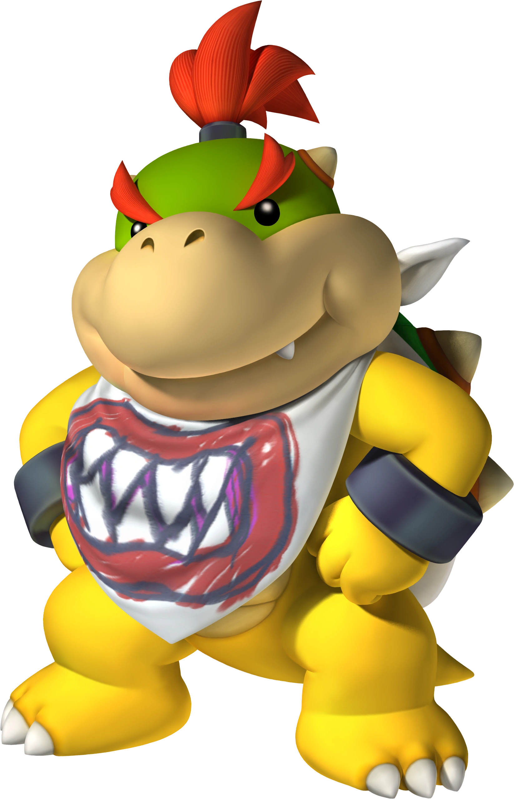

Bowser Jr.

- Bowser Jr. é outro vilão e arquiinimigo do Mario
- Como o nome já mostra, ele é o filho do Bowser, príncipe e futuro rei da Raça Koopa
- É hiperativo e travesso, idolatra seu pai e diz que quer ser igual a ele.
- Usa frequentemente seu Junior Clown Car para se locomover e seu Pincel Mágico como arma
- Bowser Jr. foi apresentado oficialmente como personagem do Mario no jogo Super Mario Sunshine.
- Nesse jogo, Mario, Peach e Toadsworth vão passar as férias em uma ilha tropical chamada de Ilha Delphino, porém quando já chegam lá, eles notam uma piscina de gosma colorida e suja pela pista de aterrisagem.
De repente, Mario encontra uma máquina chamada FLUDD, que espirra água por inimigos, gosma e outras coisas ruins e com isso, consegue limpar a pista de aterrisagem.
- Porém, depois de limpar aquela gosma, Mario é preso por policiais e oficiais da Ilha Delphino, que alegam que ele é o responsável por não apenas pela sujeira na pista de aterrisagem, mas também em vários outros lugares da Ilha Delphino,
mostrando até um desenho de alguém parecido com o Mario, com o nome fictício de Shadow Mario e todo preto. Por causa disso, Mario é forçado pela polícia a limpar a ilha até que esteja toda limpa.
- Enquanto continua cumprindo seu dever de limpar a ilha, Mario se depara com o Shadow Mario na cabeça de uma estátua. Em seguida, quando vê a princesa Peach, Shadow Mario pula para fora da estátua e sequestra a princesa, mas Mario consegue parar a criatura a tempo.
Algum tempo depois, Mario continua a limpar a ilha, mas vê o Shadow Mario de novo com a princesa Peach e logo descobre que é o Bowser Jr. disfarçado, o qual alega que seu pai, o Bowser,
disse que a princesa Peach é a sua mãe e que deve ficar com ela e com isso, leva ela para longe com ele.
- Depois de muitas limpezas e tentativas de achar Peach, Mario finalmente consegue encontrá-la em uma piscina gigante usada por Bowser e Bowser Jr para relaxar.
Então, Mario consegue destruir a piscina com a ajuda de FLUDD, Bowser e Bowser Jr. caem em uma ilha pequena,
enquanto Mario e Peach caem exatamente em uma praia da Ilha Delfino.
- No final, enquanto Bowser e Bowser Jr. ficam sozinhos na ilha deserta, Bowser tenta falar para o filho que a princesa Peach não é sua mãe de verdade,
mas Jr. fala que já sabe que ela não é a sua mãe e que vai querer continuar indo atrás do Mario para tentar derrotá-lo
- Desde então, Bowser Jr. continua a ajudar seu pai a sequestrar a princesa Peach para deixá-lo feliz.
- Apesar de suas constantes vilanias, Bowser Jr. também é considerado como herói, por exemplo no jogo Super Mario 3D World + Bowser's Fury, onde Bowser Jr. transporta Mario para o Lago Lapcat, fala que seu pai ficou maior, mais agressivo, violento e cruel, transformando-se no Fury Bowser e que não consegue pará-lo.
Por causa disso, Bowser Jr. implora pela ajuda de Mario para fazer seu pai voltar ao normal e ele acaba concordando em ajudá-lo.
- Seus poderes têm mais a ver com seu pincel mágico, seu Junior Clown Car e uma habilidade semelhante à do seu pai de girar seu casco, a qual é mostrada em alguns jogos.
Página Anterior